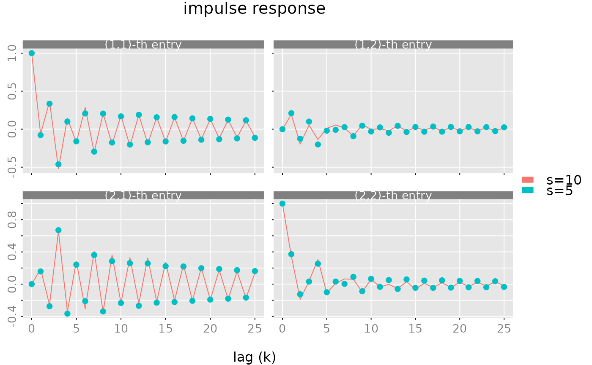

Balanced Realization and Balanced Truncation
balance.RdCompute a balanced realization or a balanced truncated statespace realization of a rational matrix in statespace form.
Usage
balance(
obj,
gr,
tol = 10 * sqrt(.Machine$double.eps),
s0 = NULL,
truncate = TRUE
)Arguments
- obj
(
stspobject) rational matrix in statespace form.- gr
a list with two components
PandQwhich contain two Grammians. These Grammians may e.g. be computed withgrammians.- tol
a tolerance parameter used for the determination of the rank \(PQ\). If
s0 = NULLthen the procedure estimates the rank of \(PQ\) and setss0equal to this estimate. Ifs0is given, thentolis ignored.- s0
determines the size of the two diagonal blocks of transformed Grammians \(P\), \(Q\), respectively (for
truncate = TRUEthe statespace dimension of the balanced truncated statespace realization.- truncate
(boolean) If true then the balanced truncated model is returned.
Value
A list with components
- obj
(
stspobject) represents the balanced (truncated) statespace realization.- T,Tinv
the state transformation and the inverse state transformation matrix. Note that for the case
truncate=TRUEthe matrixTis ans0 x smatrix andTinvis of dimensions x s0.- P,Q
the transformed (and truncated) Grammians.
- sigma
the vector of singular values of the matrix \((P^{1/2}Q^{1/2})\).
Details
Let \(P,Q\) denote the controllability and the observability Grammian of a statespace realization $$K(z) = C(Iz^{-1} - A)^{-1}B +D$$ of a rational matrix \(K(z)\) with statespace dimension \(s\). The matrix \(PQ\) is diagonalizable and the eigenvalues are real and non negative. Let \(\sigma_1^2 \geq \cdots \geq \sigma_s^2 \geq 0\) denote the eigenvalues of \(PQ\) and suppose that \(PQ\) has rank \(k\leq s\), i.e. \(\sigma_i=0\) for \(i>k\). Then there exists a statespace transformation \(T\) which renders both Grammians into diagonal form and furthermore we have \(p_{ii}=q_{ii}=\sigma_i\) for the first \(k\) diagonal entries of the (transformed) Grammians.
The (non zero) \(\sigma_i\)'s are equal to the (non zero) singular values of the Hankel matrix of the impulse response coefficients of \(K\) and hence are called Hankel singular values. These singular values are also the singular values of the product \(P^{1/2}Q^{1/2}\) where \(P^{1/2}\) and \(Q^{1/2}\) denote "square roots" of the Grammians \(P\) and \(Q\) respectively.
The procedure balance(obj,...) computes a somewhat simplified "balanced" form where
the transformed Grammians \(P,Q\) are block diagonal with two diagonal blocks of dimension
\(s_0\) and \(s_1 = s - s_0\) respectively. The two
upper, left blocks of \(P\) and \(Q\) are diagonal and the diagonal entries are
\(p_{ii}=q_{ii}=\sigma_i\) for \(i=1,\ldots,s_0\).
If \(s_0=k\) is equal to the rank of \(PQ\)
then the product of the two lower, right blocks of \(P\) and \(Q\) is zero
(up to numerical errors).
Note that \(k=\mathrm{rk}(PQ)\) is equal to the minimal statespace dimension, i.e. there exists a statespace realization with statespace dimension \(k\) and any statespace realization of \(K\) has a statespace dimension \(geq k\). Such a minimal statespace realization now be constructed by "truncating" the balanced realization: $$K(z) = C_{1}(Iz^{-1} - A_{11})^{-1} B_{1} + D$$ where \(A_{11}\) is the left, upper, \((k,k)\) dimensional block of \(A\), \(B_1\) is the upper, \((k,n)\) dimensional block of \(B\) and \(C_1\) is the left, \((m,k)\) dimensional block of \(C\).
This balanced truncated statespace realization is returned if the
optional parameter truncate is TRUE. Note that in the case where
s0 is less than the rank of \(PQ\) the truncated realization
is just an approximate realization of \(K(z)\). The approximation error
depends on the size of "neglected" Hankel singular values. Note also that the
truncated realization is not balanced (if \(s_0<k\)).
If the "target" statespace dimension \(s_0\) is not given then the procedure sets \(s_0\) equal to an estimate of the rank of \(PQ\). This estimate is computed by inspecting the singular values \(\sigma_i\) of the product of the square roots \(P^{1/2}\) and \(Q^{1/2}\).
The above discussion deals with the controllability and the observability
Grammian of the statespace realization. However, one may also use
other pairs of Grammians, e.g. for invertible matrices \(K\)
one may use the controllabaility Grammian of the statespace realizatton
and the observability Grammian of the statespace realization of the
inverse K^{-1}(z).
Examples
# example A ############################################################
# "obj" is a (1 by 1) rational matrix in statespace form,
# with stespace dimension s = 2.
obj = stsp(A = c(0,0.2,1,-0.5),
B = c(1,1), C = c(1,0))
gr = grammians(obj, 'lyapunov')
bal = balance(obj, gr)
print(cbind(bal$P, bal$Q, diag(bal$sigma, nrow = 2, ncol = 2)))
#> [,1] [,2] [,3] [,4] [,5] [,6]
#> [1,] 1.586904 0.000000 1.586904 0.000000 1.586904 0.000000
#> [2,] 0.000000 1.458699 0.000000 1.458699 0.000000 1.458699
all.equal(grammians(bal$obj), bal[c('P','Q')])
#> [1] TRUE
# example B (non minimal statespace realization #########################
# The "rbind" operation below returns a statespace realization with
# statespace dimension s = 4. However the minimal statespace dimensions
# is s0 = 2.
obj = rbind(obj, obj)
gr = grammians(obj, 'lyapunov')
bal = balance(obj, gr, s0 = 2, truncate = FALSE)
# the upper (2 by 2) block of the (transformed) controllability
# Grammian is diagonal, the lower (2 by 2) block is "zero".
# This shows that the (balanced) realization is not controllable.
print(bal$P)
#> [,1] [,2] [,3] [,4]
#> [1,] 2.244221 0.000000 0.000000e+00 0.000000e+00
#> [2,] 0.000000 2.062912 0.000000e+00 0.000000e+00
#> [3,] 0.000000 0.000000 2.535741e-33 6.600794e-33
#> [4,] 0.000000 0.000000 6.600794e-33 2.939217e-32
# the upper (2 by 2) block of the (transformed) observability
# Grammian is diagonal and equal to the upper block of bal$P.
print(bal$Q)
#> [,1] [,2] [,3] [,4]
#> [1,] 2.244221 0.000000 0.0000000 0.0000000
#> [2,] 0.000000 2.062912 0.0000000 0.0000000
#> [3,] 0.000000 0.000000 1.4464176 -0.3808884
#> [4,] 0.000000 0.000000 -0.3808884 1.3313601
# the product of the (transformed) controllability and observability
# Grammians is (approximately) diagonal and the diagonal entries are
# the squares of the Hankel singular values.
print(bal$P %*% bal$Q)
#> [,1] [,2] [,3] [,4]
#> [1,] 5.036528 0.000000 0.000000e+00 0.000000e+00
#> [2,] 0.000000 4.255604 0.000000e+00 0.000000e+00
#> [3,] 0.000000 0.000000 1.153575e-33 7.822199e-33
#> [4,] 0.000000 0.000000 -1.647632e-33 3.661739e-32
print(bal$sigma^2)
#> [1] 5.036528e+00 4.255604e+00 2.792358e-17 5.975078e-33
all.equal(grammians(bal$obj), bal[c('P','Q')])
#> [1] TRUE
# we may construct a minimal realization by 'balanced truncation'.
# note that we let the procedure determine the minimal statespace dimension
trunc = balance(obj, gr)
print(trunc$obj)
#> statespace realization [2,1] with s = 2 states
#> s[1] s[2] u[1]
#> s[1] 0.3498560 0.3119731 -1.3299446
#> s[2] -0.3119731 -0.8498560 -0.5954318
#> x[1] -0.9404128 0.4210339 1.0000000
#> x[2] -0.9404128 0.4210339 1.0000000
# compare with the above balanced realization
print(bal$obj)
#> statespace realization [2,1] with s = 4 states
#> s[1] s[2] s[3] s[4] u[1]
#> s[1] 3.498560e-01 3.119731e-01 2.966202e-17 -2.542543e-17 -1.329945e+00
#> s[2] -3.119731e-01 -8.498560e-01 -6.729309e-17 1.299258e-17 -5.954318e-01
#> s[3] -9.041099e-19 -3.500935e-17 -6.872820e-01 8.809205e-01 -5.551115e-17
#> s[4] 8.747771e-17 -2.948488e-17 8.092046e-02 1.872820e-01 -1.665335e-16
#> x[1] -9.404128e-01 4.210339e-01 -5.967029e-01 -3.794017e-01 1.000000e+00
#> x[2] -9.404128e-01 4.210339e-01 5.967029e-01 3.794017e-01 1.000000e+00
# check
all.equal(pseries(obj), pseries(trunc$obj))
#> [1] TRUE
# example C (balanced truncation) ##########################
# construct a random rational matrix with statespace dimension s=10
obj = test_stsp(dim = c(2,2), s = 10, bpoles = 1, bzeroes = 1)
# compute an approximate realization with s0 = 8
gr = grammians(obj, 'minimum phase')
trunc = balance(obj, gr, s0 = 5)
print(trunc$sigma)
#> [1] 1.050338828 0.912130569 0.801352887 0.307619618 0.201641532 0.093077495
#> [7] 0.026798379 0.015051710 0.004094821 0.002717688
max(abs(unclass(pseries(obj, lag.max = 25)) -
unclass(pseries(trunc$ob, lag.max = 25))))
#> [1] 0.0305373
plot(pseries(obj, lag.max = 25), x_list= list(pseries(trunc$obj, lag.max = 25)),
type = c('l','p'), legend = c('s=10', 's=5'))
